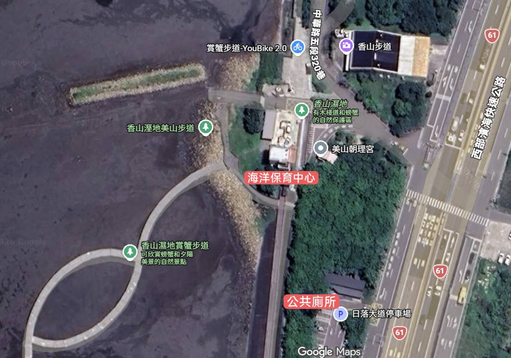

🏛️ 館內與周邊服務

(本圖來自Google地圖)
📍 地址：新竹市香山區大庄里西濱路三段500巷17號
📞 電話：03-5216121 分機 480
💧 飲水機位置：位於外面右手邊販賣商品的小房間，歡迎自備水壺補充水分。
🚻 洗手間：館內設有洗手間，但為避免擁擠，建議大家多加利用館外設立的公共廁所喔！
🚌 交通與接駁指引
路線一：搭乘至「大庄站」 (下車後步行或騎乘 YouBike 約 550 公尺即可抵達)
- 🚍 5801 路線公車動態
- 🚍 5803 路線公車動態
- 🚍 5807 路線公車動態
- 🚍 5823 路線公車動態
路線二：搭乘至「聖公宮」 (下車後步行或騎乘 YouBike 約 500 公尺即可抵達)
特別路線：觀光巴士